Book One
Whimsical
Whimsical
Pond Tails
A Cute & Super-Funny
Flipbook Adventure
↷ drag the corner or tap the arrow to begin ↶
A Cute & Super-Funny Flipbook Adventure — Book One
A Cute & Super-Funny
Flipbook Adventure
↷ drag the corner or tap the arrow to begin ↶
Page 1
Once upon a splashy Tuesday, in a pond so dramatic it had its own weather patterns, lived Mama Duck (Levi) and Papa Duck (Papi), the most in-love, most unhinged couple to ever share a nest. Mama Duck ran the household like she was personally being filmed for a documentary about herself, gesturing with a twig she treated as a royal scepter. Papa Duck was, at the time, completely and utterly bald — a shine so powerful that fish surfaced just to look at it — and Mama Duck loved him for it with the intensity of a thousand suns.
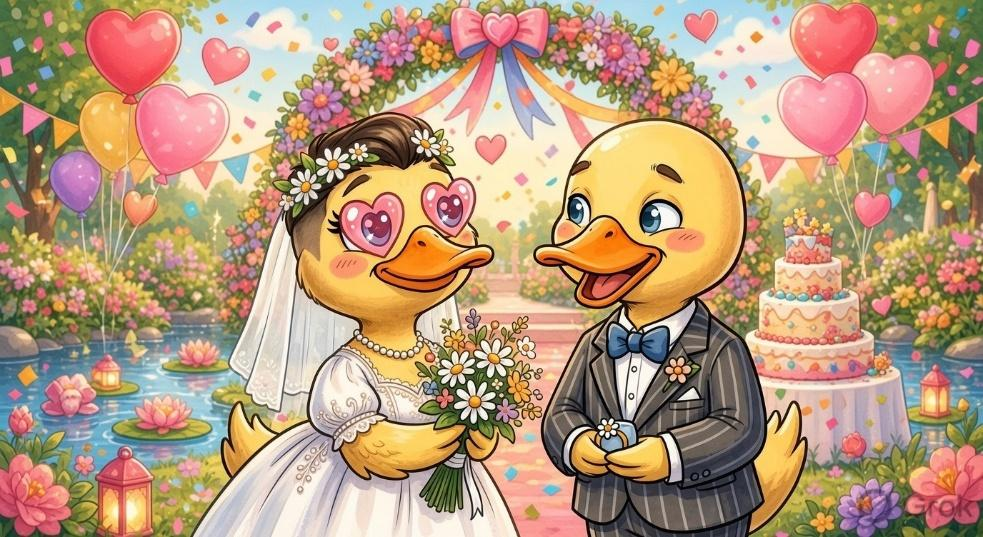
Then, on an otherwise unremarkable Tuesday, one single feather sprouted on Papa Duck's head. One. Feather. Mama Duck spotted it from across the pond, let out a scream so loud three sleeping frogs woke up mid-croak and fell off their lily pads, and the entire pond ecosystem paused to watch the fallout. A fish literally stopped mid-bite. This was, by pond standards, a Level Nine Emergency, second only to the Great Bread Crumb Shortage of two summers ago.
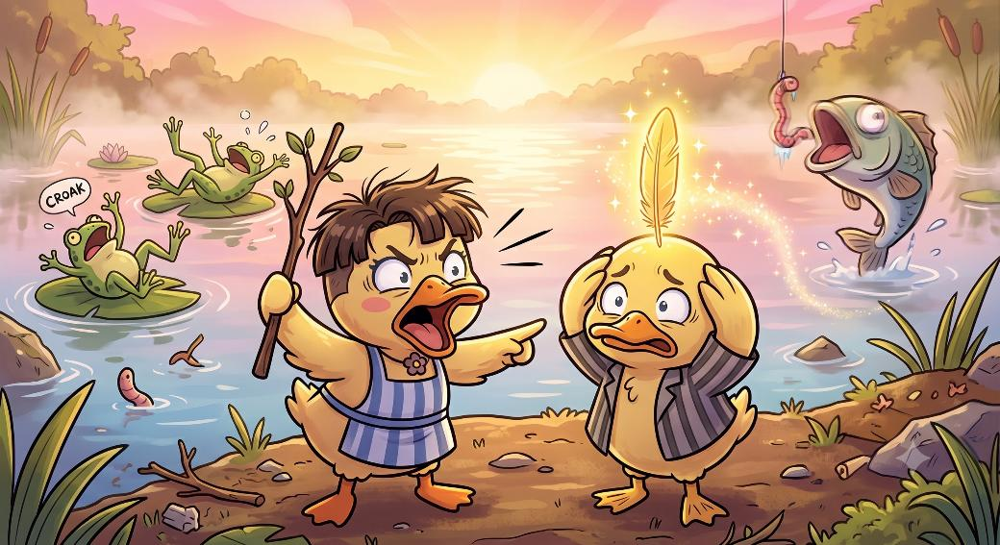
Page 2
What followed was not so much a breakup as a full-blown geopolitical crisis. Papa Duck packed his one feather into a matchbox for safekeeping and moved in with Fling Drake (Luma), who drove a convertible roughly the size of a teacup and carried a water gun he called "diplomatic leverage." That living arrangement lasted approximately four days before Papa Duck upgraded to White-Beard Drake (Joe), a wealthy, impossibly well-groomed drake whose shoreline had actual throw pillows, for reasons no duck has ever explained.
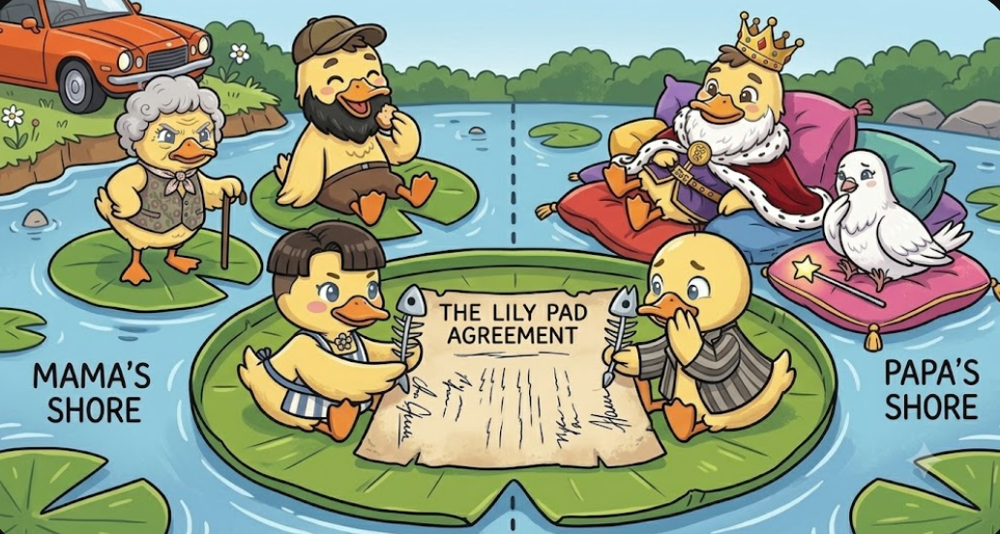
Fling Drake, mildly heartbroken but mostly just hungry, paddled back to Mama Duck's shore and was absorbed into the family within minutes, no interview process required. The two ducks then signed an actual treaty — scratched into a lily pad with a fish bone — dividing the pond into Maternal Shore (superior, chaotic, correct) and Paternal Shore (fine, calm, has pillows). Every relative in the extended family was assigned a side. Nobody remembers the meeting where this happened. It just... happened.
Page 3
Mornings on the Maternal Shore ran on chaos, not clocks. Brainy Grandpa (Iska) told a bedtime story so long it looped past breakfast and into lunch, and somehow it still hadn't found its point. Fierce Grandma (Serratia) patrolled nearby, once loudly scolding a dragonfly for "existing too close to her personal space." Off to the side, Golden-Winged cool Aunt (Jazzie) swept through mid-air with both wings stuffed full of shiny junk, tossing a bottle cap to one duckling and a suspiciously familiar pebble to another, running what was essentially an unregulated gift economy — somehow, everyone deferred to her on absolutely everything, including breakfast decisions, weather predictions, and pond gossip.
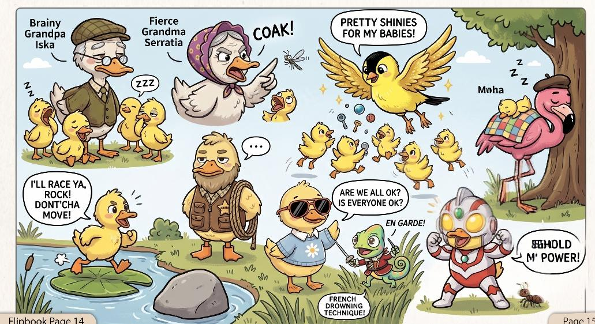
Savior Uncle (EhabEseed) stood at attention nearby with his rope, visibly disappointed that nothing had gone wrong yet. Strong-flipper duckling (Hikal) jogged past on his lily-pad treadmill, yelling motivational nonsense at a rock. Multilingual competitive chameleon (Vovan), fully costumed, challenged a patch of tall grass to a duel it did not agree to. Migratory Uncle (Moha) landed just long enough to gift everyone a single souvenir pebble before collapsing into a nap so deep a duckling used him as a picnic table. The Caring Comedian Duckling(Nyes) kept asking everyone if they are ok then pulling a silly joke to make evryone giggle And Ulty Duckling (C88666point), forehead gem glowing, declared the pond saved from an ant that was, by all accounts, just walking to work.
Page 4
Further down the bank, Pretty Eye Duckling (Salaxi) had been staring at her own reflection for so long she'd started narrating it like a nature documentary. Beside her, Ninja Claws (Samesizeclaws) — a duckling who is, somehow, also entirely lobster — had just finished interrogating a daisy for "suspicious behavior" and moved on to a second, equally innocent daisy. Love-Charm assassin Duckling (Merida) sauntered past and, with a single hair flip, relieved a nearby fish of his entire breakfast, his dignity, and possibly his will to live. Frogy sibling (TNK News) documented the whole thing in a folder labeled "BREAKING," narrating events aloud in a voice only he could hear, while Chancellor Feather Duckling (Borjuiss) trailed behind apologizing to the daisies, the fish, and one innocent cloud that had nothing to do with any of it.
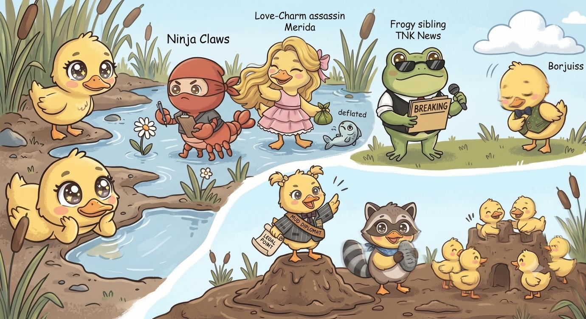
Out on Mud Island, The Pond Diplomat Duckling (Pyro) delivered an impassioned legal ruling on a dispute nobody remembered starting, while Island Sharer Duckling (Alexa) broadcast the entire proceeding to zero viewers with total confidence. The Cousins, meanwhile, rebuilt the same mud fort for the eleventh time that morning, cheering with identical enthusiasm each time as if it were brand new, which, emotionally, it was.
Page 5
Across the water, life on Papa Duck and White-Beard Drake's shore was calmer — right up until it very much wasn't. Tipsy Duck-vader (Kakosi), sunglasses on despite squinting at literally everything, spotted three sleeping ducklings, mistook them for an unusually generous pile of bread crumbs, scooped all three up under one wing, and paddled off triumphantly announcing he'd "found breakfast." Panic broke out instantly — and it wasDove Godmother(Lady Kweenie) who actually handled it, gliding, glowing just enough to make Tipsy Duck-vader freeze mid-paddle, lifting the three ducklings back out from under his wing. Elegant Swan Aunt (Lady Vivanna) arrived a beat later in a dramatic glide and launched into a lecture on "proper bread crumb identification etiquette" so long and so extra that Tipsy Duck-vader forgot he was even in trouble. By the time White-Beard Drake and a panicked Papa Duck (his one feather standing fully vertical) arrived, it was already over — Dove Godmother had the ducklings back, Elegant Swan Aunt had delivered her opinions, and Her Grace Koyal (Anamika), mid-speech about "keeping the peace" when it all started, was still a sentence behind, insisting things were "well in hand." Tipsy Duck-vader apologized with gold trinkets and was broke again within the hour.
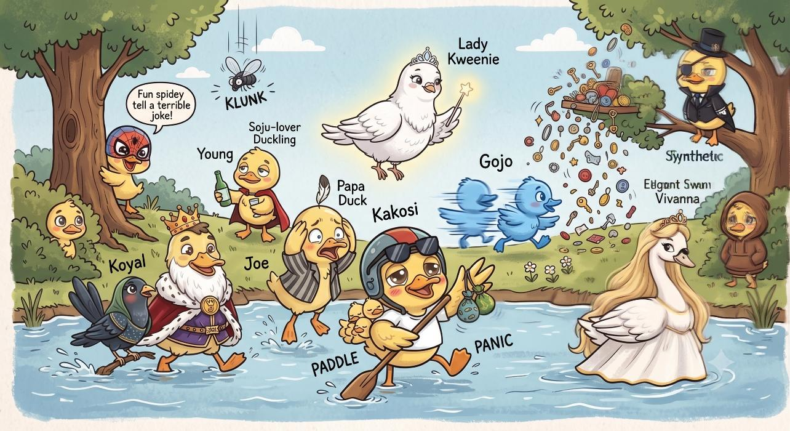
Nearby, Fun spidey duckling (Spiderman) told a joke so bad a nearby fly gave up flying for the day, Soju-lover Duckling (Young) wandered through with his cape and drink asking no one in particular what year it was, Cool ciel duckling (Synthetic) watched the whole scene silently from a branch while judging everyone, Introvert Duckling (Nookie) surfaced from his hoodie exactly once — for a snack — and Hyper-active Duckling (SatoruGojo) zipped past everyone six times trying to "help," making things measurably worse each time.
Page 6
Back on the Maternal Shore, three ducklings were hiding the biggest secret in pond history. Hardworking Non-Chalant Duckling (Romeo) and The TWINNS (Nobu & Orion) were not, in fact, ordinary ducklings — they were visiting aliens, quietly disguised in denim jackets and identical unbothered expressions. Whenever real danger loomed, the three would lock eyes, dive beneath the surface, and SHIMMER into gleaming, fully-tailed swimmers, vanishing through a secret underwater tunnel straight out to open ocean, giggling the entire way about how ridiculous their family was.
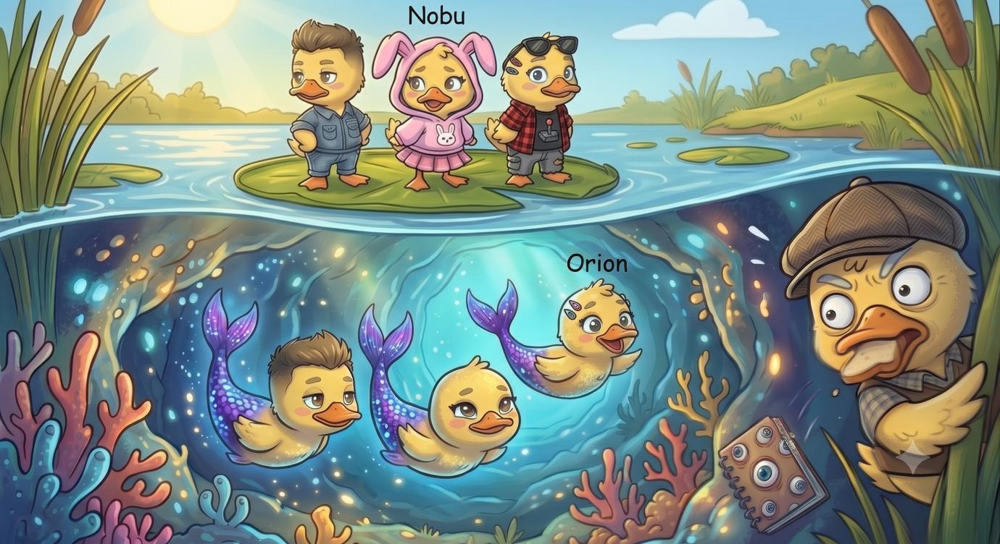
Cool yet evil uncle (Akuku) had suspected this for weeks, filling an entire notebook labeled "EVIDENCE" with increasingly unhinged doodles of eyeballs. Today, crouched behind a reed mid-bite of a bread crumb, he finally caught the shimmer with his own eyes — and choked so hard on the bread that he alerted the entire pond to his presence, which was, unfortunately for everyone, exactly the worst possible outcome.
Page 7
Word of the shimmer spread fast, and — this is the part nobody saw coming — it did not spread to the ducklings who might protect the twins. It spread straight to the ones who wanted to eat them. Ruthless Falcon Aunt (Gracie) called an emergency meeting on a lily pad, opening with the sentence, "So. Mermaid tail. Breakfast. Thoughts?" Golden-Winged cool Aunt (Jazzie), who normally loves playing genshin and ignores pond summits, actually showed up for this one, torn between her deep personal love for the twins and her deeper personal love for trying new cuisines, and spent the whole meeting negotiating for "just a small taste, for research." Cool yet evil uncle (Akuku), notebook still covered in eyeball doodles, slapped it on the table as "irrefutable proof" and demanded a seat on the committee.
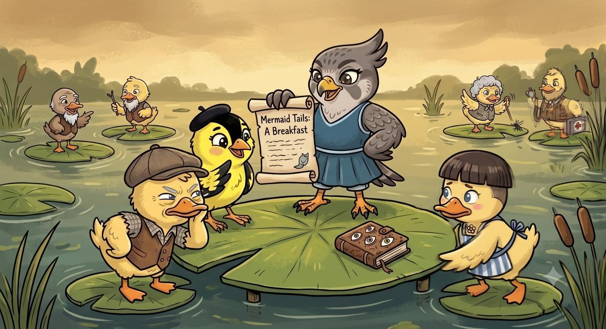
And then, to the horror of literally everyone watching from a safe distance, Mama Duck herself wandered over, peered at the recipe scroll Ruthless Falcon Aunt had drawn up, and — after thirty solid years of insisting she was strictly a bread-crumb duck — muttered, "...well, I suppose, purely out of curiosity," and pulled up a lily pad to sit down. Nobody stopped her. Nobody stopped any of them. Brainy Grandpa, Fierce Grandma, Savior Uncle, Strong-flipper duckling, Ninja Claws — every single duckling and elder who might have intervened was somewhere else entirely, mid-treadmill, mid-daisy-interrogation, mid-nap. For once, the entire maternal family's total lack of coordination worked directly against the twins instead of just being mildly chaotic.
Page 8
Below the surface, Hardworking Non-Chalant Duckling and The TWINNS realized, with mounting horror, that no one was coming to help them — not this time. Ninja Claws was busy accusing a lily pad of espionage. Strong-flipper duckling was three treadmill laps deep and unreachable. Savior Uncle, ironically, had wandered off to look for a crisis somewhere else entirely, missing the one happening right under his beak. Even Golden-Winged cool Aunt, their usual soft spot in the family, was currently negotiating breakfast portions on the enemy committee.
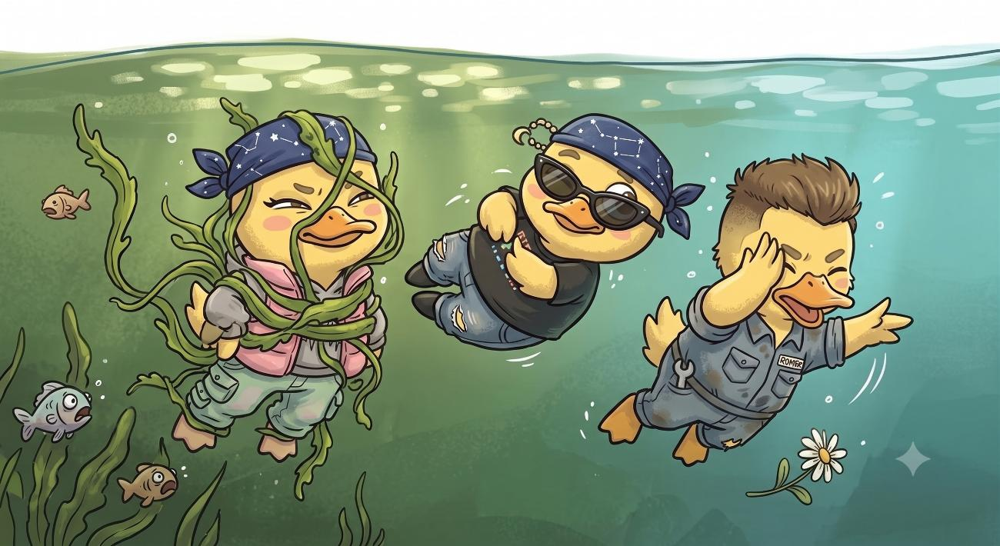
So the three did the only sensible thing available to secret alien ducklings with zero backup: they panicked, badly, and improvised. Nobu wrapped herself in pond weed and attempted to pass as "just a very sad plant." Orion tried floating perfectly still and pretending to be a rock, undercut slightly by her continued blinking. Romeo, showing marginally more strategy, suggested they just swim very, very fast, which — everyone agreed, after several seconds of weed-based deliberation — was probably the better plan.
Page 9
The moment the Breakfast Committee spotted three ducklings swimming very, very fast in the opposite direction of breakfast, the chase was on. It was, by any measure, a disaster of coordination. Ruthless Falcon Aunt swooped low, wings flapping, recipe scroll still clutched in one talon. Golden-Winged cool Aunt, still emotionally torn, chased along while shouting contradictory instructions like "get them — gently!" Cool yet evil uncle sprinted along the shoreline waving his notebook and shouting "I TOLD YOU SO" to absolutely no one listening. Mama Duck, huffing along at the back of the pack, kept stopping to ask if this was really necessary and then continuing anyway.
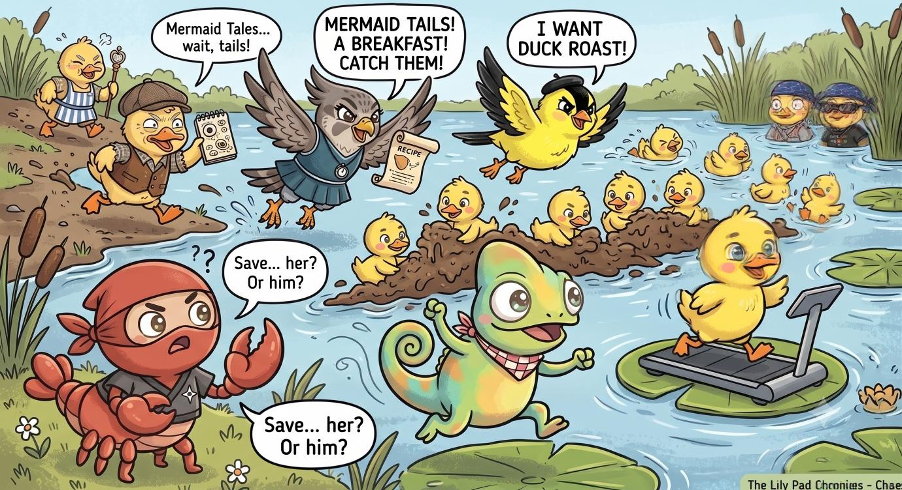
Meanwhile the rest of the maternal shore accidentally made everything worse. Multilingual competitive chameleon, still color-shifting from his earlier duel, joined the chase on the wrong side entirely, believing it to be some kind of race. The Cousins built a mud wall directly in the chase's path, for reasons unrelated to the emergency and entirely related to it being Tuesday. Strong-flipper duckling jogged straight through the middle of the chase without slowing down, shouting "CARDIO WAITS FOR NO CRISIS" as three aunts and an uncle tripped over his treadmill. Not one single member of the maternal family managed to help the twins on purpose. Somehow, through sheer accident, that turned out to be exactly what saved them — for now.
Page 10
Hardworking Non-Chalant Duckling and The TWINNS finally reached the hidden channel, lungs burning, weed costume long abandoned — but something was different this time. The tunnel stretched longer than it ever had. The current pulled instead of guided. And far below them, in water darker than any of the three had ever swum through, something enormous shifted.
There was no rescue team. No Savior Uncle with a rope. No Ninja Claws standing guard. Just three ducklings, completely on their own, swimming toward whatever was waiting in the dark — while behind them, on the surface, an entire exhausted, out-of-breath maternal family finally skidded to a stop at the water's edge and realized, all at once, what they'd actually been chasing.
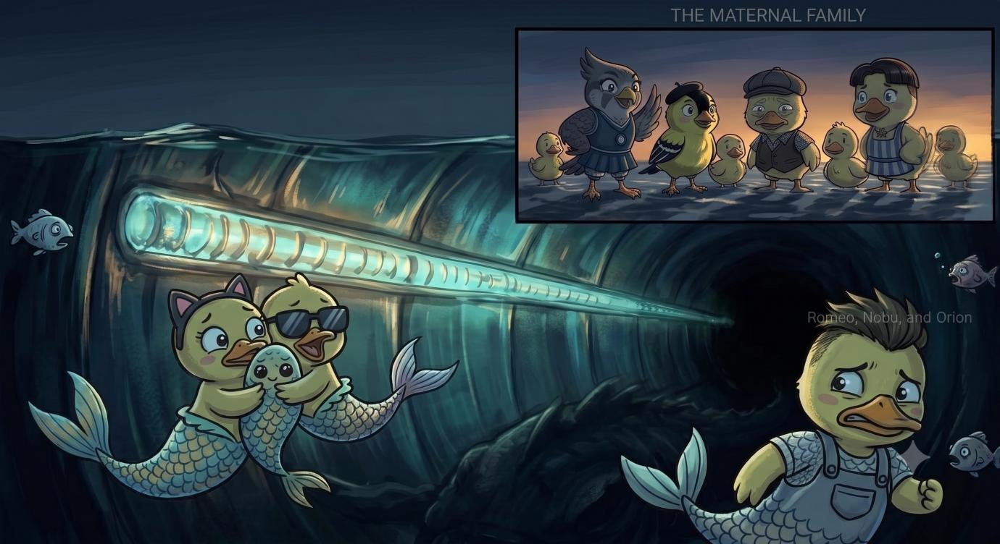
Will the twins make it to open water before whatever's down there reaches them first? Will the Breakfast Committee ever live this down? And will Mama Duck ever admit she was two seconds from trying mermaid tail for breakfast?
Turn the page... if you dare.
The adventure continues in
Book Two 🦆✨
↶ tap back to read it again ↷